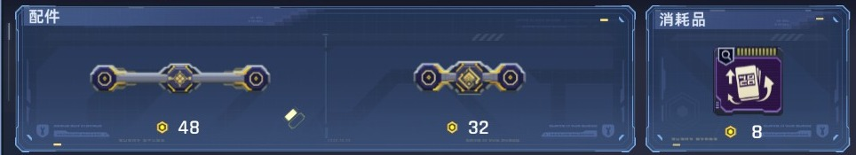
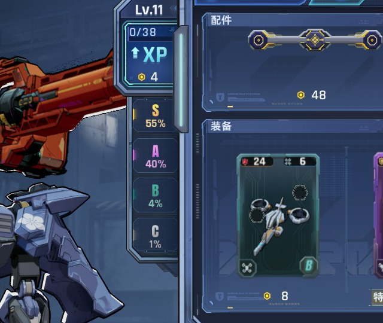
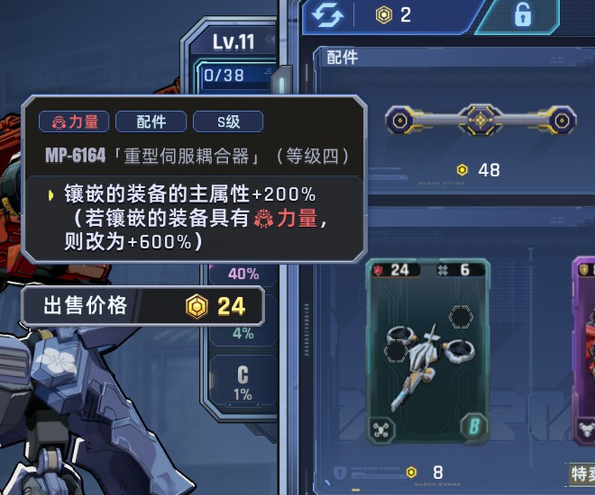
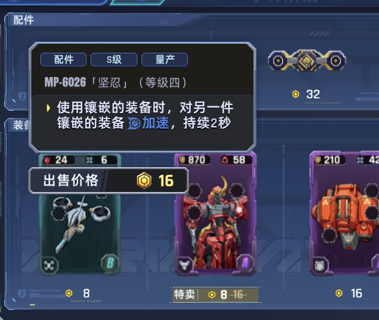
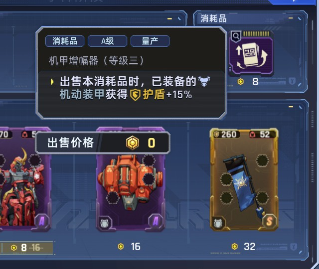

商店
- 先确认顶行三个货位和当前余额。
- 依次悬停长桥、短桥、消耗品。每次等对应提示框出现再截图，三张裁图合并读取。
- 购买、出售或刷新会改变现场，操作后从新全景开始下一批。

第 10 天商店的点位取自 1920 × 1080 历史画面中的图标中心。实际操作前需重新确认窗口和布局。
当前界面全景 · 直接截全景
截取范围 整个窗口
读取字段 gold、stock、inventory
长桥 · 悬停
悬停顶行左侧长配件中央，等名称和词条出现。
参考操作点 (1104, 183) · 窗口 1920 × 1080
截取范围 (580, 80) → (1220, 620)
读取字段 name、price、stats、effect
第一次裁图，详情尚未出现

补拍后可读的长桥词条

短桥 · 悬停
悬停顶行中间短配件中央，读取提示框和货架价格。
参考操作点 (1429, 183) · 窗口 1920 × 1080
截取范围 (910, 80) → (1550, 620)
读取字段 name、price、stats、effect
实际裁图

消耗品 · 悬停
悬停顶行右侧紫色消耗品，读取出售触发条件以及货架价格。
参考操作点 (1742, 185) · 窗口 1920 × 1080
截取范围 (1240, 80) → (1880, 620)
读取字段 name、price、stats、effect
实际裁图

战后核对
- 打开本场战报，确认双方和胜负。
- 左上三个统计页签逐个切换，每次确认选中后截取中央统计区；已选中的页签直接截图。
- 三页采全后统一比较。
第 16 天战报的点位取自 1920 × 1080 历史画面中的图标中心。实际操作前需重新确认窗口和布局。
当前界面全景 · 直接截全景
截取范围 整个窗口
读取字段 outcome、reward
当前已打开的统计全景 · 直接截全景
保存当前已选统计页的全景，只填写这一页可见的字段。需要对照三页时，依次采集下方三个目标。
截取范围 整个窗口
读取字段 damage、shield、buffs
伤害页 · 点击页签或详情
点击战报左上第一个图标，页签高亮后截双方伤害条目。
参考操作点 (115, 196) · 窗口 1920 × 1080
截取范围 (40, 230) → (1880, 810)
读取字段 damage
防御页 · 点击页签或详情
点击左上第二个加号图标，页签高亮后截双方防御条目。
参考操作点 (259, 196) · 窗口 1920 × 1080
截取范围 (40, 230) → (1880, 810)
读取字段 defense
增益页 · 点击页签或详情
点击左上第三个圆形图标，页签高亮后截双方增益条目。
参考操作点 (404, 196) · 窗口 1920 × 1080
截取范围 (40, 230) → (1880, 810)
读取字段 buffs